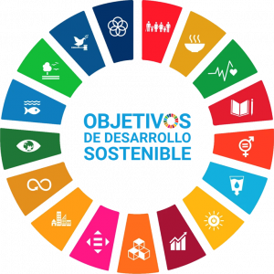

🌱 Sostenibilidad en el sector tecnológico
¿Qué es la sostenibilidad?
La sostenibilidad es la capacidad de satisfacer las necesidades actuales sin comprometer los recursos y oportunidades de las futuras generaciones. En el sector tecnológico, esto significa desarrollar software, hardware y servicios que reduzcan el impacto ambiental, promuevan la equidad social y sean económicamente viables a largo plazo.
Dimensiones de la sostenibilidad
- Ambiental: minimizar el consumo energético y la generación de residuos electrónicos.
- Social: fomentar la inclusión digital, accesibilidad y bienestar de las personas.
- Económica: garantizar la viabilidad financiera y la innovación responsable.
Aspectos ASG
Los aspectos ambientales, sociales y de gobernanza (ASG) permiten que una empresa tecnológica evalúe su impacto y tome decisiones responsables. Por ejemplo:
- Ambiental: eficiencia energética de servidores.
- Social: políticas de diversidad e inclusión.
- Gobernanza: transparencia en la gestión y cumplimiento de normas.
Marcos internacionales
- Agenda 2030 de la ONU → 17 ODS para un mundo sostenible.
- ODS → Objetivos de Desarrollo Sostenible, guían la acción de empresas y gobiernos.
- ISO 14001 y estándares de sostenibilidad → ayudan a medir y reportar impactos.
ODS más relacionados con tecnología
| ODS | Relación con la tecnología |
|---|---|
| 4. Educación de calidad | Plataformas educativas online, formación digital. |
| 9. Industria, innovación e infraestructura | Innovación en TIC, eficiencia energética y desarrollo de infraestructuras sostenibles. |
| 12. Producción y consumo responsables | Software para optimizar recursos y reducir residuos electrónicos. |
